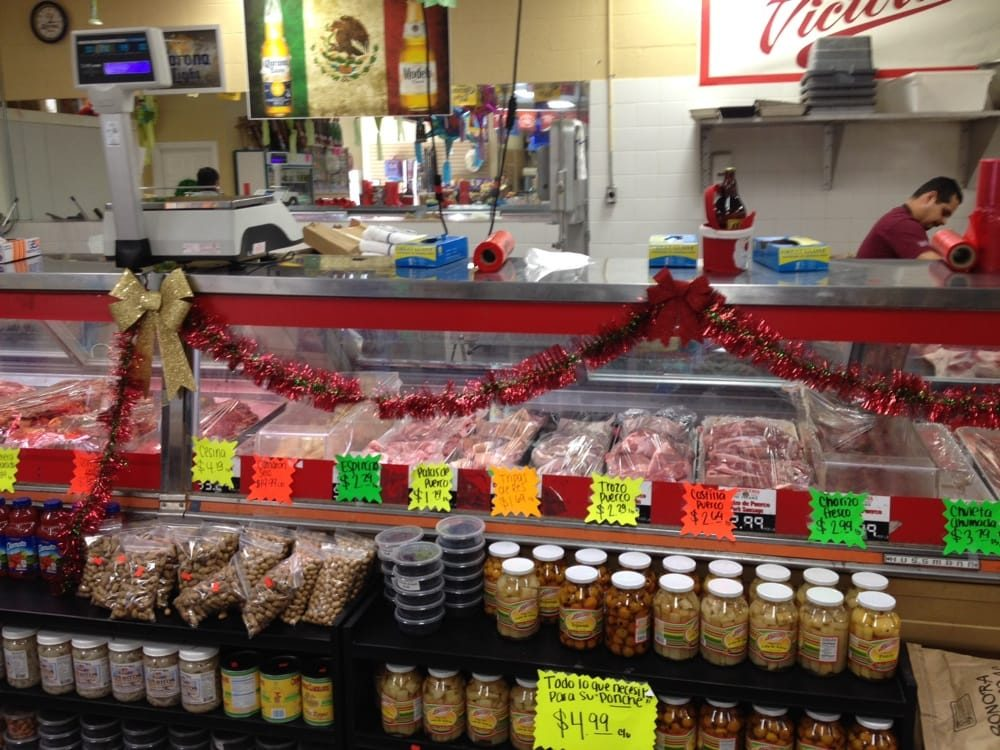

Handmade, every day
Tamales y Tortillas
Corn tortillas pressed for every order and tamales by the dozen, cooked or frozen to go.

What it is
Two things this place is loved for: tortillas made fresh for each order, and tamales people drive across the valley for.
Good for
Holiday tamales by the dozen, a tortilla run for dinner, or stocking the freezer for later.
Tortillas
Fresh corn tortillas pressed for your order, every time.
Tamales
Sold by the dozen, hot and ready or frozen to steam at home. One reviewer calls them the best they have ever had.
Tip
Holidays go fast, so call ahead for a big tamal order.
Ready when you are.
Call ahead or just walk in to 517 Main St.
What people say
C
Carrie Cnossen
Local Guide · Google
I have been eating here for about three years, this place never disappoints me! Friendly and helpful staff, the food is always fresh. Taco shells are homemade! The lengua is amazing here! Today I bought a few things in the market and everyone was just so kind. Loyal customer, to support our local business!
M
Miguel R
Local Guide · Google
THIS is the local butcher shop you were looking for. It's not just a meat market like almost all of the rest. This is the real deal. You want a whole pig? A special cut?